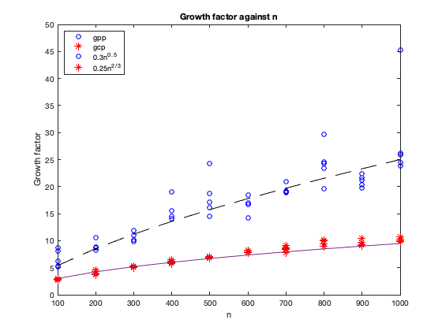

clear all
close all
n = [100:100:1000]';
N = length(n);
gcp = zeros(N,5);
gpp = zeros(N,5);
for i = 1:N
for j = 1:5
A = rand(n(i));
[LU,p,q,gf,L,U]= lucp(A);
gcp(i,j) = gf;
[L,U,P,g] = lupp(A);
gpp(i,j) = g;
end
end
for k = 1:5
plot(n,gpp(:,k),'bo');
hold on
plot(n,gcp(:,k),'r*');
hold on
end
plot(n,0.3*(n.^0.5))
hold on
plot(n,0.25*(n.^(2/3)),'k--')
hold on
legend('gpp','gcp','0.3n^0^.^5','0.25n^2^/^3','Location','northwest')
title('Growth factor against n')
xlabel('n'); ylabel('Growth factor')
fprintf('As n increases, the growth factor gradually increases, however, it doesnot shoot up with n, but instead fit the two constat functions. \n Even though, the growth factor computed with complete pivoting fits the constant curves better than, the one for partial pivoting.\n This becasue the upper triangular matrix obtained from complete pivorting is better than that obtained from partial pivoting \n');
As n increases, the growth factor gradually increases, however, it doesnot shoot up with n, but instead fit the two constat functions.
Even though, the growth factor computed with complete pivoting fits the constant curves better than, the one for partial pivoting.
This becasue the upper triangular matrix obtained from complete pivorting is better than that obtained from partial pivoting
